CNC Consultancy unifies civil engineering excellence with cutting-edge IT solutions — from smart infrastructure to intelligent software.

DPRs, drainage & waterway systems, and landmark building projects.
See Civil WorkSoftware platforms, IoT integration, and cloud-powered business systems.
See IT WorkQuick links to everything we do.
IT development & Civil engineering services — from web apps and cloud solutions to architectural design and construction supervision.
Learn more →See our portfolios: Restaurant Management Systems, Smart IoT setups, DPRs, drainage networks, and building projects.
View projects →Innovation at the Civil-Tech frontier: Smart Cities, IoT structural monitoring, automated surveying, and civil management software.
Our R&D →Our story, vision, mission, core values, and the leadership team driving both divisions forward.
About us →Get in touch for a quote or consultation — share your project idea and we'll respond promptly.
Contact →One brand. Two disciplines. Infinite possibilities.
To deliver infrastructure that lasts generations and technology that defines them — combining rigorous civil engineering with agile software innovation to create smarter, safer, and more sustainable communities.
Civil Projects
Software Deployments
Smart IoT Sites
Client Retention